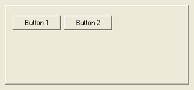

ContainerGadget()
语法
Result = ContainerGadget(#Gadget, x, y, Width, Height [, Flags])概要
Creates a container gadget in the current GadgetList. It's a simple panel gadget which can contain other gadgets.
参数
#Gadget A number to identify the new gadget. #PB_Any can be used to auto-generate this number. x, y, Width, Height The position and dimensions of the new gadget. Flags (optional) Flags to modify the gadget behavior. It can be composed of one of the following constants: #PB_Container_BorderLess : Without any border (Default). #PB_Container_Flat : Flat frame. #PB_Container_Raised : Raised frame. #PB_Container_Single : Single sunken frame. #PB_Container_Double : Double sunken frame.
返回值
Returns nonzero on success and zero on failure. If #PB_Any was used as the #Gadget parameter then the return-value is the auto-generated gadget number on success.
Remarks
Once the gadget is created, all future created gadgets will be created inside the container. When all the needed gadgets have been created, CloseGadgetList() must be called to return to the previous GadgetList. OpenGadgetList() can be used later to add others gadgets on the fly in the container area.
A 'mini help' can be added to this gadget using GadgetToolTip().
This gadget supports the SetGadgetColor() and GetGadgetColor() functions with #PB_Gadget_BackColor as type to change the gadget background.
示例
If OpenWindow(0, 0, 0, 322, 150, "ContainerGadget", #PB_Window_SystemMenu | #PB_Window_ScreenCentered) ContainerGadget(0, 8, 8, 306, 133, #PB_Container_Raised) ButtonGadget(1, 10, 15, 80, 24, "Button 1") ButtonGadget(2, 95, 15, 80, 24, "Button 2") CloseGadgetList() Repeat : Until WaitWindowEvent() = #PB_Event_CloseWindow EndIf

参阅
OpenGadgetList(), CloseGadgetList(), SetGadgetColor(), GetGadgetColor()
已支持操作系统
所有